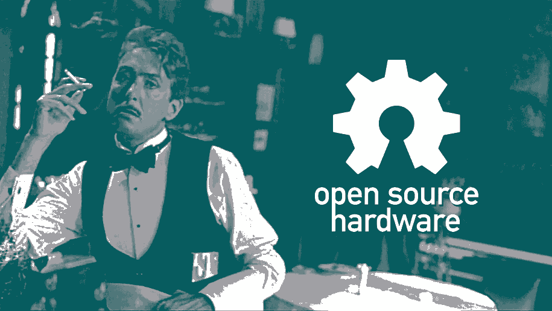

oshaas
Socialism capitalism democracy psychotherapy — all these deal with housekeeping chores. They have no answers to our fundamental situation, no transcendent programs.
— FM-2030
Software as a service gets a bad rep.
From Adobe holding creatives at virtual gunpoint with cloud subscriptions to AWS charging Lyft millions of dollar per month in perpetuity. You don't have to look past your screen to see new streaming services vying for a bite of Netflix's lunch and corporate CRM automatons clashing for enterprise dominance.
I'm not here to convince you that proprietary software is bad and you should use open source software instead, though Stallman may like a word with you.
Actually, I think Saas is a compelling and lucrative business model because it generates predictable, scalable, and recurring revenue from fixed costs.
Hardware startups often sell software services as well, which allow them to generate nonlinear profitability from device sales.
An open source hardware business model could theoretically use Saas as a source of revenue (an example is Blynk), but this seems kind of defeatist to its potential.
Hardware exists in the real world, so fixed costs imply zero marginal cost to create a new physical good. There are a few methods to reach that outcome:
- Reduce the limit of minimum average cost with economies of scale
- Provide an intermediary platform to capture a portion of the value from actions of gig workers
- Control self-replicating systems that process natural energy and materials to generate wealth without money
because it isn't easy to deliver paradise it had to be tacky, so then you get Levittown and the suburbs...
— Terence McKenna
| 🏭 Economies of scale |
🧰 Gig workers |
🖨️ Wealth without money |
|
| 🏭 | 🏙️🚢 Conglomerate |
🐱💻 Services Platform |
👼💵 Cost Reduction |
| 🧰 | 🧠🎮 Human-based computation |
🧳🏛️ Decentralized Autonomous Organization |
🔬👩🔬 Independent Research |
| 🖨️ | ⚙️🍪 Component Manufacturer |
📽️🐥 Content Creation Network |
🧑🚀✨ Transcendence |
Each of these fixed cost strategies and their relationship to open source could be further explored here, but for brevity I leave this as an exercise to the reader.
My conclusion is that the most successful existing OSH companies in 2021 are component manufacturers: Arduino, Adafruit, SparkFun, BigTreeTech, Luxonis... using economies of scale to fabricate large quantities of open hardware components is a proven business model!
The best scenario is transcendence, but the reality is most wealth now is concentrated in conglomerates. Enterprises whose primary competitive advantage is wealth without money remain largely unexplored beyond the realms of renewable energy and material recycling.
While component manufacturers use economies of scale to sell wealth without money, I advocate we need an inverse revolution in parallel: to use wealth without money to sell economies of scale. In short, this is about cost reduction making possible efficient replication of open source hardware systems locally. Sophisticated ecologies of DIY machine kits are not going to be adopted en masse fast enough to liberate humanity from its rolling cycles of convenient obsolescence. We must sell rocksteady plug and play functionality.
industrial productivity can be achieved on a small scale
— Marcin Jakubowski
Assuming we are able to build, operate, and sell a flexible manufacturing system to efficiently assemble open source designs, the quest for recurring and predictable revenue remains. Remember, we are competing against proprietary hardware companies using Saas, who would gladly eat us as a venture capitalist brunch.
Many recurring revenue models are periodic subscriptions, but there are superior alternatives that better align objectives. In the context of self-replicating machines, we can apply performance-based logistics (with partial functionality-transfer as an additional outcome metric) to generate recurring revenue.
This business approach approximates the Defense Acquisition System deployed by the U.S. Department of Defense. We're going to repurpose this system to bring peace through abundant and equitable prosperity.
Open Source Hardware as a (Performance Based Logistics) Service
There are a few obstacles this model must overcome
| Lack of working capital to pay the upfront cost of manufacturing large numbers of devices | Distributed ledgers enable programmable financial asset creation, pairing asynchronous peer-to-peer lending with on-demand manufacturing. Although existing defi protocols are designed to work with overcollateralized crypto positions, the beauty of these decentralized protocols is that we are not bound to work within those paradigms and people are free to decide for themselves to accept a smart contract to fund an open source hardware machine. |
| Psychological desire for ownership | It is impossible to own anything because of death. Eventually, all hardware will decay, therefore the best we can hope for is the ability to recycle, repair, repurpose, or recreate. Ultimately I think true ownership is not about legal possession, but more a matter of sustaining future utility. Nullum tempus occurrit regi. |
Let's dive into a Jupyter Notebook to take an interactive look at the numbers:
open source programmable data-driven business plan for manufacturing and selling ShowerLoops in the United States.